Still the Greatest? A Data-Driven Story to (Re)Discover Muhammad Ali's Career
Nicknamed "The Greatest", Muhammad Ali is regarded as one of the most significant and celebrated sports figures of the 20th century. Apart from being known as the greatest heavyweight boxer of all times, other decisive factors have also shaped the boxer's life, including his devotion to social justice issues.
 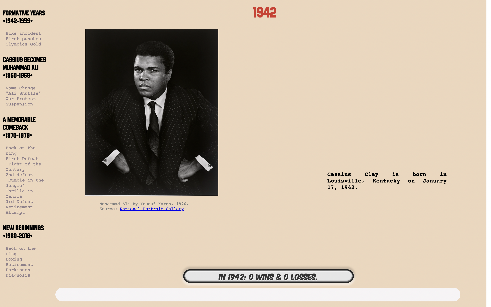
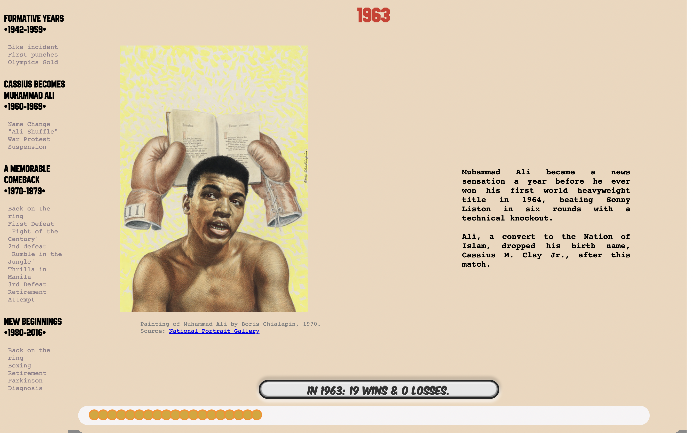
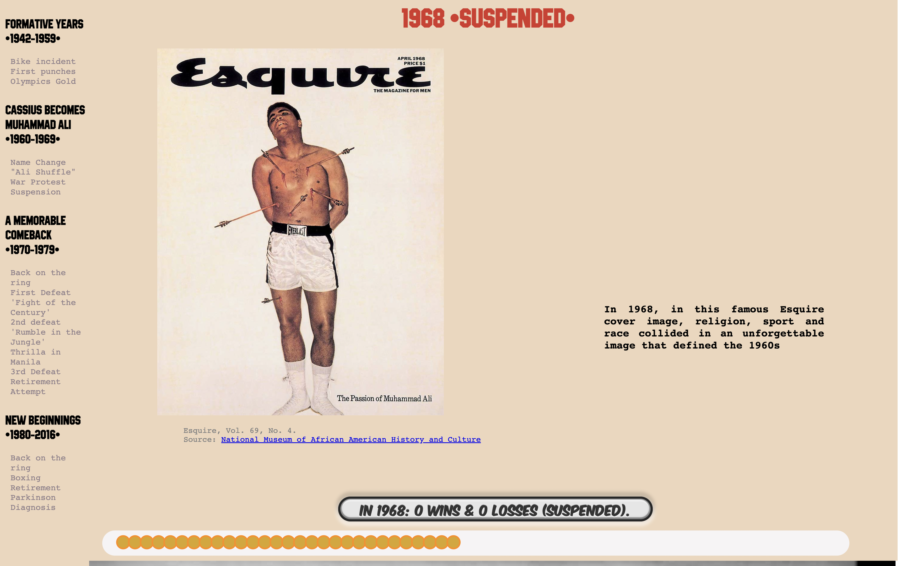
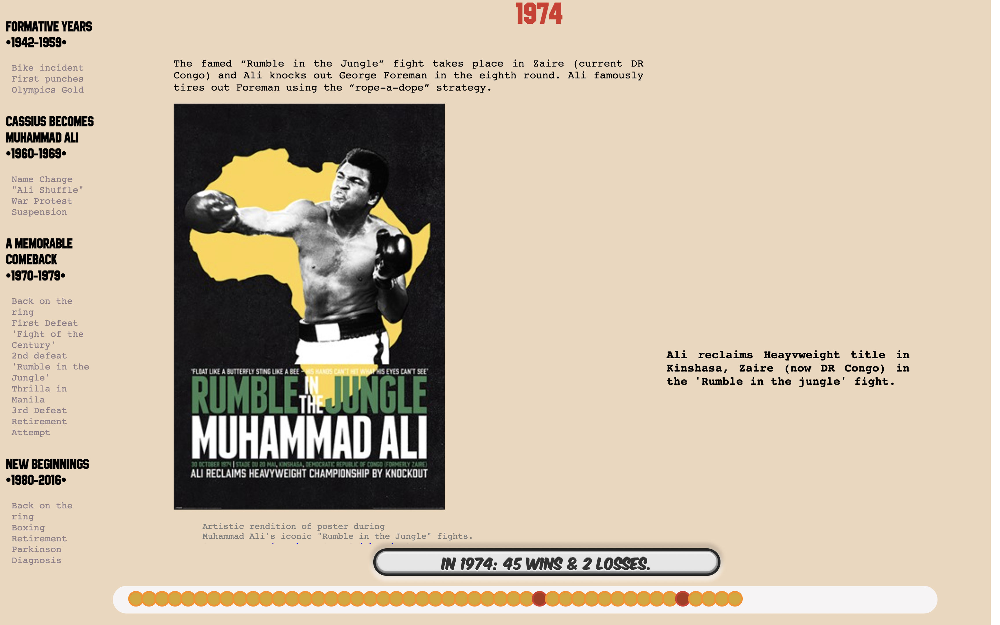
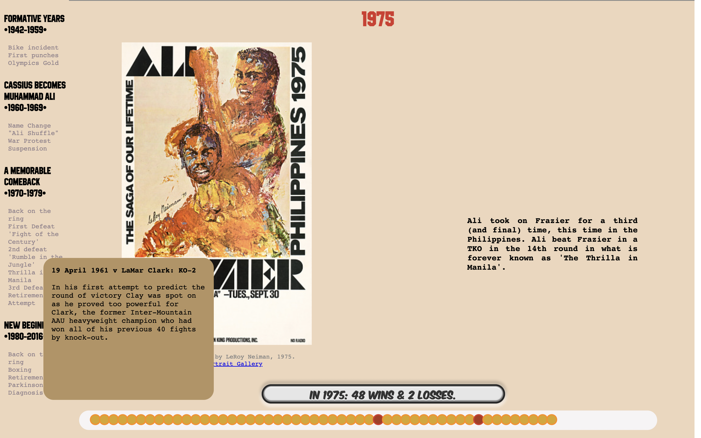
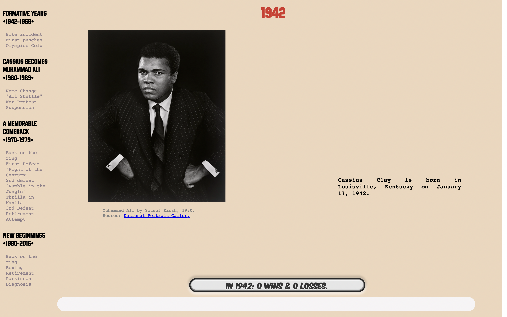
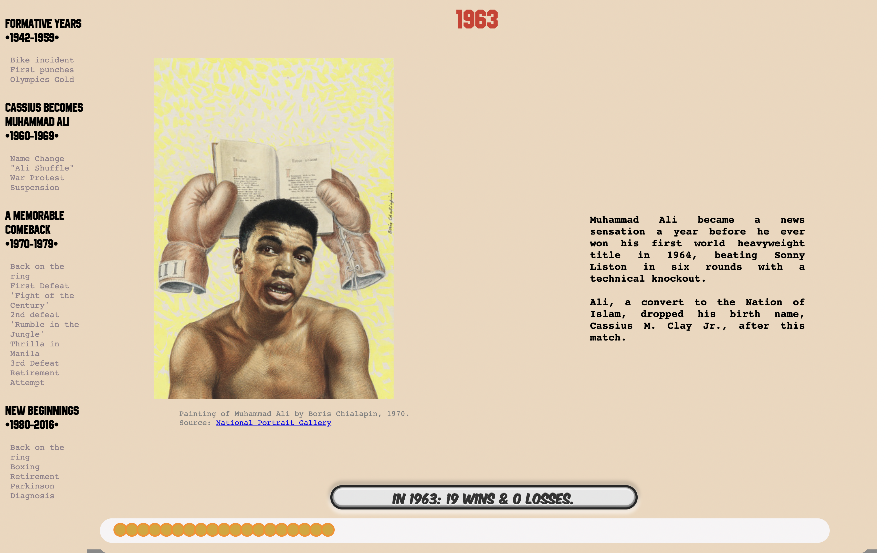
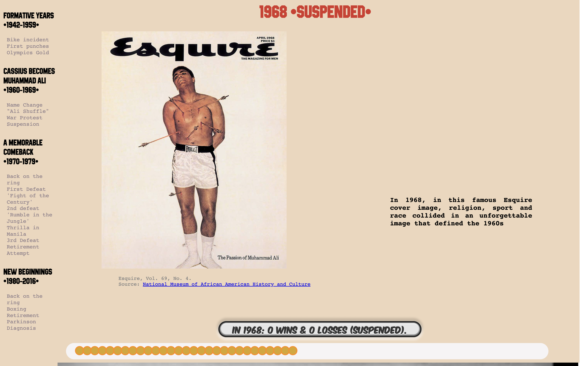
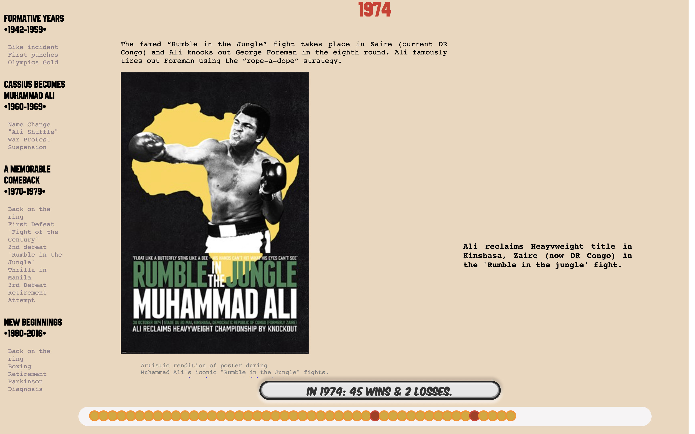
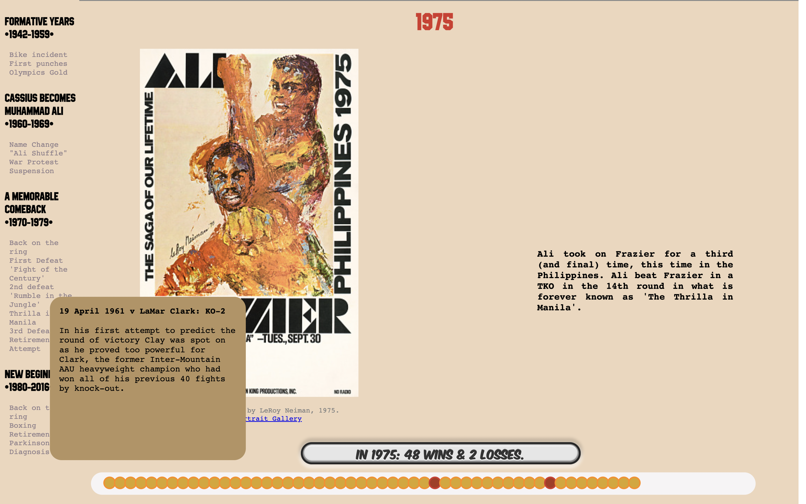
 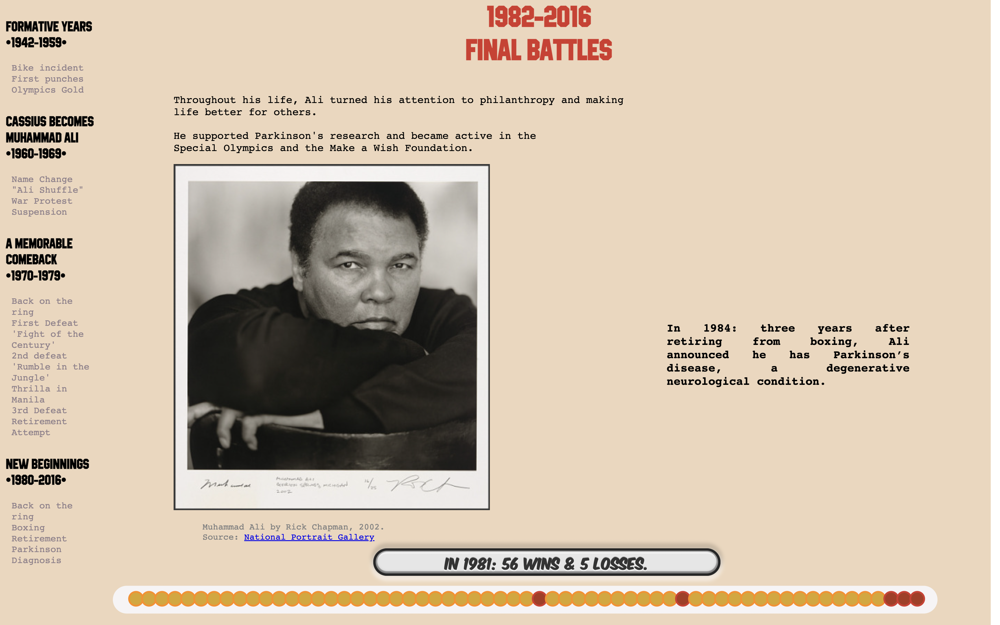
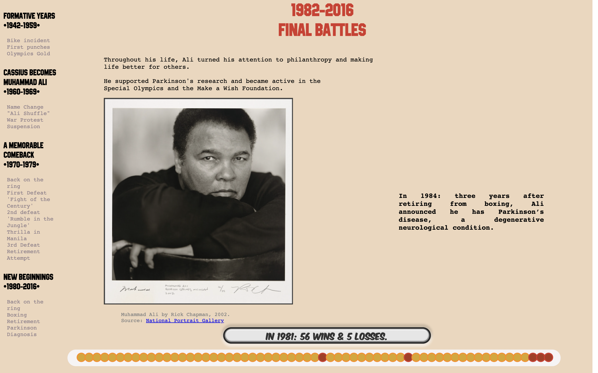
Timeless Fighting Spirit
Dynamic Timeline & Storytelling
By crafting a visual narrative of Muhammad Ali's biography, this project weaves together different elements of his legacy to help the reader explore in a horizontal or vertical manner different chapters of his life.
This includes record-breaking boxing accomplishments which occured alongside significant social and political upheavals that shaped his era. In addition to narrative content and boxing records, symbolic items and iconic photos immortalizing defining events are enmeshed to enrich the storytelling experience.
Taking a closer look at the Smithsonian Collection, what are some of these famous objects that you recognize which embody Muhammad's Ali Greatness?
Tools & Datasets
- Concept, Iteration, & Prototyping via Figma
- HTML, CSS & Javascript
- Scrollytelling via Scrollama
- D3.js to structure the data-driven timeline
- Typographic refinement via DaFont & Font Squirrel
Images were obtained through the Smithsonian Open Access API, historical content and data curated and compiled through desktop research.